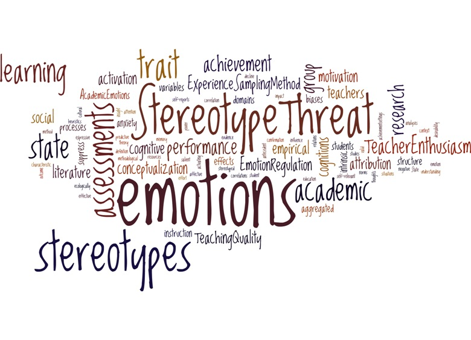

It seems expectations of others expectations are always surrounding all of us all of the time. No matter the richness of the environment, just anticipating the reaction of others or perception of others can defeat ourselves or our performance. I understand that this possibly destructive self imposed that just comes with the territory.It is tricky to not worry about these psychological effects without being effected. Especially it you care about the environment at large, the purpose of the congregation, and the subject matter.
Often the queues are lost on many, particularly those that are the most comfortable and "entrenched" . I am worried about the way it changes the way It makes me think, problem - solve and function in an intense learning environment. Knowing that they are there and not just trying to ignore them helps to feel that there at least a chance of eventual normalization.According to the research of Dr. Steele higher expectations formally communicated to those in a stereotype threat can help begin to solve and familiarize the problem. All in all it seems unlearning seems much harder than learning...
